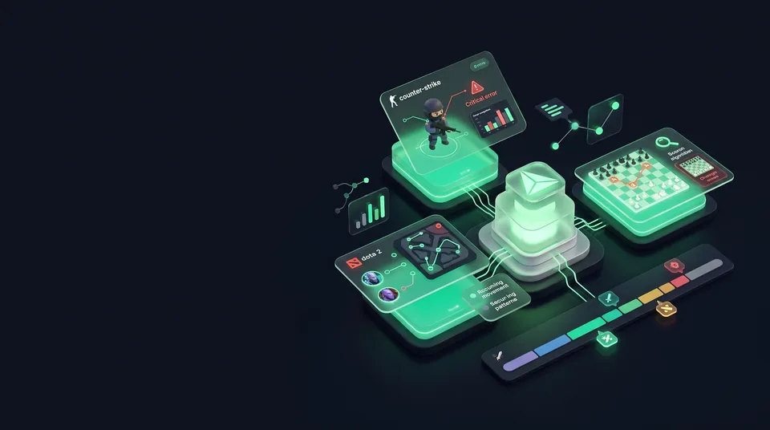
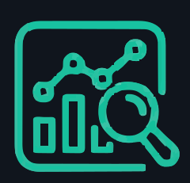

Critical Moments Feed
У задумі добірка критичних моментів допоможе зосередитися на рішеннях, що могли вплинути на результат.
План: момент → наслідок → дія
ДЕМОНСТРАЦІЙНА ПЛАТФОРМА · CS2, DOTA 2, CHESS
Зрозумілий розбір критичних моментів допомагає побачити не лише сухі цифри, а й контекст рішення, його наслідки та можливий наступний крок.
Демо показує приклад інтерфейсу, а не результат аналізу реального матчу.
МАТЧ + КРИТИЧНІ МОМЕНТИ
ДОКАЗ + ПРИЧИНА ПОМИЛКИ
ПАТЕРН + НАСТУПНА ДІЯ
ПЕРЕВАГИ / ВІД ЦИФР ДО РІШЕНЬ
У задумі добірка критичних моментів допоможе зосередитися на рішеннях, що могли вплинути на результат.
План: момент → наслідок → дія
Запланований пошук схожих ситуацій має допомогти помічати повторювані рішення.
Задум: повторювані ситуаціїУ майбутньому таймлайн має показувати контекст події до та після неї.
Задум: подія + контекстЗаплановано пов’язувати пояснення з контекстом раунду й конкретним моментом.
План: раунд + таймкод + фактДемо показує концепцію для CS2, Dota 2 і шахів із поясненнями українською.
Одна мова для різних ігорТРИ ІГРОВІ ДИСЦИПЛІНИ
Картки показують, як можна розбирати ситуації в різних іграх. Це демонстраційні сценарії, а не аналіз підключеного профілю.
Демо ілюструє сценарій розбору рішення в раунді, його наслідків і можливого кроку для практики.
ДЕМО · СЦЕНАРІЙ РОЗБОРУ
Рішення гравця · командна підтримка · наслідок
Запланований сценарій пошуку схожих ситуацій допоможе порівнювати рішення та розглядати альтернативи.
ДЕМО · СЦЕНАРІЙ РОЗБОРУ
Схожі ігрові ситуації · альтернативні рішення
Демо ілюструє, як можна показати ключові ходи та зміни оцінки позиції.
ДЕМО · СЦЕНАРІЙ РОЗБОРУ
Ключові ходи · зміна оцінки позиції
ЗАПЛАНОВАНИЙ СЦЕНАРІЙ
Це задум майбутньої роботи продукту. Наразі сайт демонструє інтерфейс і приклад розбору.
01 / ГРА
CS2, Dota 2 або шахи — сценарій розбору залежить від дисципліни.
02 / МАТЧ
Запланований крок для майбутнього сервісу. Поточна форма нічого не надсилає.
03 / РОЗБІР
У задумі продукту це таймлайн, причини критичних моментів і рекомендації для практики.
ДЕМО / РОЗБІР ОДНОГО РІШЕННЯ
Подія на таймлайні, контекст матчу та зрозумілий наступний крок — в одному розборі.
Умовний приклад ігрової ситуації, не результат реального матчу.
Гравець вийшов на позицію до флешки, поки напарник залишався за укриттям.
Що покращити: узгодити вихід із командою та дочекатися підтримки.
РАУНДИ МАТЧУ
00:09 Перший kill на Mid
00:18 Ранній пуш —40 HP
00:28 Смерть без розміну
01:02 Встановлення бомби
Чому це важливо: без узгодженої підтримки ранній вихід залишає гравця вразливим і ускладнює розмін.
Що покращити: дочекатися флешки та синхронізувати вихід із напарником.
Демонстраційний сценарій · вигаданий приклад, не реальний матч
Команда щойно виграла сутичку й вирішує: продовжити переслідування суперників чи використати вікно часу для цілі на мапі.
Перед продовженням погоні гравець оцінює доступність команди, видимість суперників і безпечність шляху до цілі.
Звірити ресурси й позиції союзників; якщо продовження розділить команду, згрупуватися та обрати безпечнішу ціль.
Демонстраційний приклад · початкова позиція, без оцінки сили ходу
1. e4
Білі пересувають королівського пішака на дві клітини: це займає простір у центрі та відкриває діагоналі для ферзя й слона. Це лише один зрозумілий приклад першого ходу, а не твердження про найкращий хід у будь-якій позиції.
ВІДЕОПРЕЗЕНТАЦІЯ
Натискання завантажить YouTube — сторонній сервіс, який може використовувати cookies.
ПОШИРЕНІ ЗАПИТАННЯ
На сайті є демонстраційні сценарії для CS2, Dota 2 та шахів. Вони показують можливу логіку майбутнього аналізу.
Це макет інтерфейсу з прикладом таймлайну та поясненням ігрового моменту. Сайт не підключається до матчів і не виконує аналіз.
Ні. Ніколи не вводьте пароль Steam або іншого ігрового профілю. Демонстраційна форма не надсилає введені дані.
ВАШ НАСТУПНИЙ МАТЧ ПОЧИНАЄТЬСЯ З РОЗБОРУ
Оберіть гру та перегляньте демонстраційний інтерфейс. Форма не запускає аналіз і не передає дані.
Пароль ігрового профілю не потрібен і не запитується.